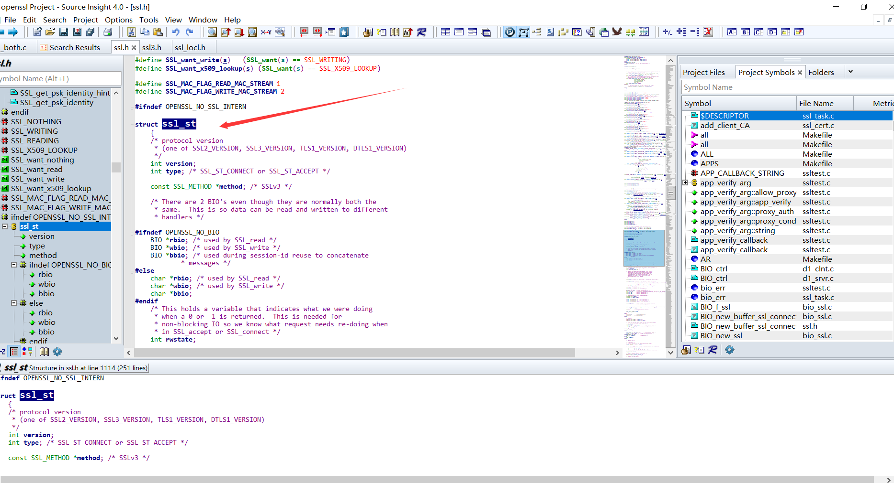
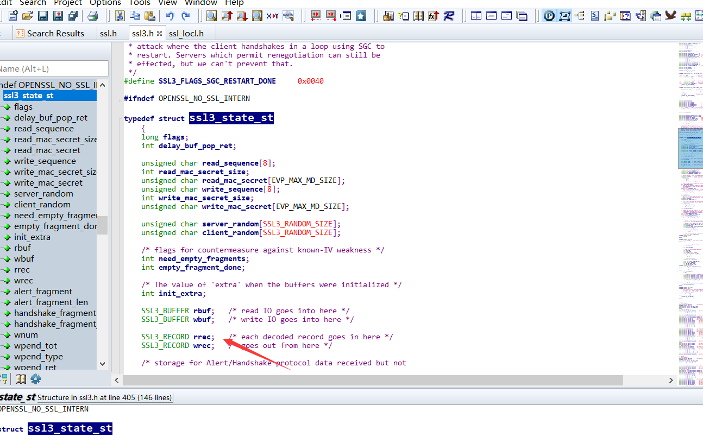

0x01 漏洞简介
CVE-2014-0160被称为心脏滴血漏洞，影响版本为OpenSSL1.0.1、1.0.1a、1.0.1b、1.0.1c、1.0.1d、1.0.1e、1.0.1f、Beta 1 of OpenSSL 1.0.2等。该漏洞会导致内存越界，攻击者可以远程读取Openssl服务器内存中最多64k的数据。众所周知，https传输的重要信息是经过加密的，可能你获取到了也不能直接利用;但是在内存中，这些关键信息是明文保存的，所以Openssl的危害可想而知，据说利用该漏洞可以获得约30%的https开头网址的用户登陆的账户和密码。漏洞披露后反响巨大，Openssl”心脏滴血”事件因其破坏之大和影响之广，堪称网络安全事件的里程碑。
0x02 Openssl简介
人们为了通信安全，使用安全协议进行通信加密，SSL(secure socket layer)就是一种安全协议，后来这款开源软件被广泛使用，常见的https网址以及那把小锁的标志，就代表网站经过ssl证书加密。
0x03 心跳检测
Openssl有一个heartBeat的心跳检测扩展，用来检测客户端与服务器之间的连接状态。
心跳包就是在客户端和服务器之间定时通知自己状态的一个自定义命令字，按照一定时间间隔发送，类似心跳，所以叫做心跳包。心跳检测主要用于长连接的保活和断线处理。
0x04 漏洞原理
心跳包询问会附加一个问询长度，如果这个长度大于实际长度，服务器会返回相同长度的信息;攻击者可以构造特殊的数据包，来造成一个越界访问。
0x05 漏洞分析
下面来分析一下漏洞的成因，这边选取openssl-1.0.1.f版本。
贴一下地址:https://www.openssl.org/source/old/
贴一下官方的修补方案:https://bugzilla.redhat.com/attachment.cgi?id=883475&action=diff
可以发现主要是dl_both.c中的dtls1_process_heartbeat(SSL s)函数被修改了，sourceinsight分析一波。
SSL *s就是传进的心跳包，dtls1_process_heartbeat对其进行处理，找到SSL结构体ssl_st:

根据unsigned char *p = &s->s3->rrec.data[0], *pl;找到s3结构体:

sourceinsight还是很好用的，右键jump定义就行了，还有全局符号查找，方便的一批。
unsigned char *p = &s->s3->rrec.data[0], *pl;这一行是将客户端发送的心跳包的data进行存放， hbtype=*p++这一行是获取type字段的值。n2s(p, payload);这一行，从p指向的数组中取前两个字节，并存放到变量payload中，这边其实是获取的心跳包的长度。
接下来就是关键
程序将会分配一段由访问者指定大小的内存空间，指针存放到bp中， 之后将返回类型、长度、payload复制进这段空间，然后会根据payload的值获取pl指向内存的payload个字节的数据到bp内存块中，最后全部返回给用户。
漏洞就出在这边，由于心跳包阔以用户自己指定，攻击者可以把payload指定的很长，而实际内容只有一个字节，而程序并没有对心跳包的payload长度和实际内容长度做对比，导致了memcpy函数会把心跳包之后的payload个大小的数据全部复制进buffer，最后返回给用户。
0x06 POC
贴一下国外dalao的POC: https://github.com/decal/ssltest-stls/blob/master/ssltest-stls.py